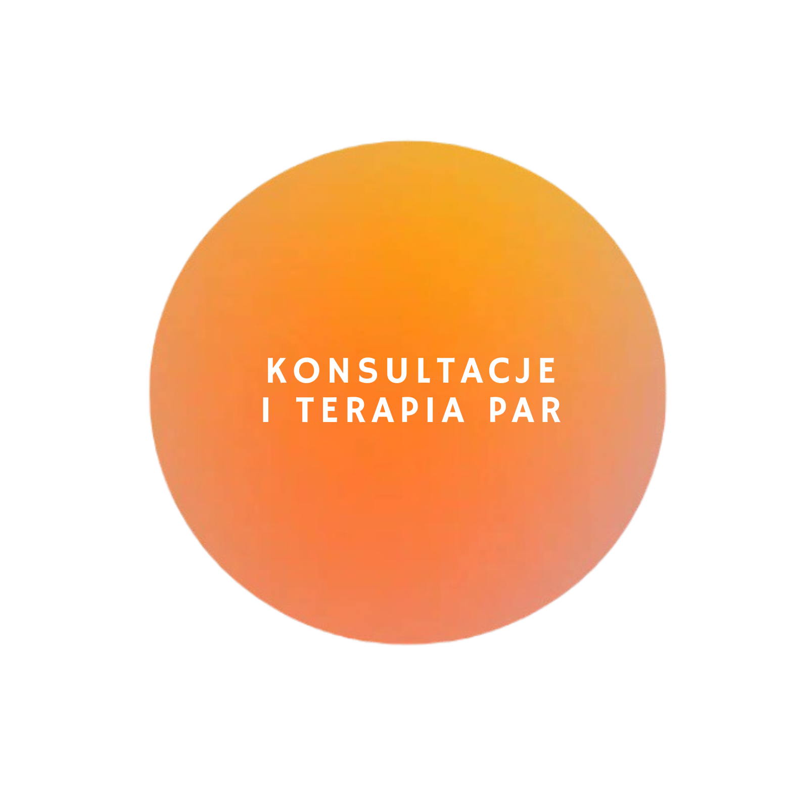

Codzienne wyzwania i natłok emocji mogą być nadmiernie przytłaczające. Może stoisz przed trudnym wyborem, masz w głowie chaos albo problem, z którym nie możesz sobie sam poradzić. Dobrym rozwiązaniem będzie skorzystanie z profesjonalnego wsparcia psychologicznego...
...Psychoterapia analityczna jest skuteczną metodą terapeutyczną dla osób, które borykają się z różnymi problemami emocjonalnymi i psychologicznymi. Głęboki proces psychoanalityczny koncentruje się na odkrywaniu ukrytych aspektów naszej psychiki. Pomaga pacjentowi zrozumieć źródła wewnętrznych konfliktów, nieświadomych procesów psychicznych i ciągłych wzorców, które wpływają na jego myśli, uczucia i zachowania w życiu codziennym...
... W Twoim związku pojawiły się trudności, z którymi nie możecie sobie poradzić sami? Zastanawiacie się nad terapią par, ale nie wiecie, czego się spodziewać? To dobry moment, aby na drodze do budowania silnej i satysfakcjonującej relacji skorzystać z profesjonalnego wsparcia psychologicznego...
...
Dorastanie w dysfunkcyjnej rodzinie pozostawia trwałe ślady na psychice i emocjach człowieka, powoduje długotrwały negatywny wpływ na jego funkcjonowanie w życiu dorosłym. Osoby, które doświadczyły zaniedbania, nadużyć lub przemocy w dzieciństwie, często zmagają się z zespołem DDA (Dorosłych Dzieci Alkoholików) lub zespołem DDD (Dorosłych Dzieci z Dysfunkcyjnych Rodzin)...
...Interwencja kryzysowa to natychmiastowa pomoc psychologiczna w sytuacjach nagłych. To forma krótkoterminowego wsparcia psychologicznego skoncentrowana na problemie, ukierunkowana na łagodzenie ostrej reakcji psychicznej, wywołanej przez gwałtowne, traumatyczne wydarzenie lub trudną sytuację życiową...
...Odkryj harmonię ciała i ducha razem z Suryą i jej autorską metodą Holistic Healing. Współczesne badania naukowe coraz częściej potwierdzają znaczenie holistycznego, czyli łączącego stan ciała i umysłu, podejścia do zdrowia i dobrostanu człowieka. Badania wykazały, że nasze myśli i emocje mają znaczący wpływ na nasze zdrowie fizyczne...
...